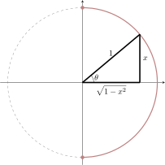

We derive the derivatives of inverse trigonometric functions using implicit
differentiation.
Now we will derive the derivative of arcsine, arctangent, and arcsecant.
The derivative of arcsine Recall means that and . Implicitly differentiating with
respect we see
While , we need our answer written in terms of . Since we are assuming that
consider the following triangle with the unit circle:

From the unit circle above, we see that
To be completely explicit,
We can do something similar with arctangent.
The derivative of arctangent Recall means that and . Implicitly differentiating with
respect we see
While , we need our answer written in terms of . Since we are assuming that we may
consider the following triangle:
We may now scale this triangle by a factor of to place it on the unit circle:
From the unit circle above, we see that
To be completely explicit,
Finally, we investigate the derivative of arcsecant.
The derivative of arcsecant Recall means that and with . Implicitly differentiating
with respect we see
While , we need our answer written in terms of . Since we are assuming that we may
consider the following triangle:
We may now scale this triangle by a factor of to place it on the unit circle:
From the unit circle above, we see that
To be completely explicit,
We leave it to you, the reader, to investigate the derivatives of cosine, arccosecant,
and arccotangent. However, as a gesture of friendship, we now present you with a list
of derivative formulas for inverse trigonometric functions.
The Derivatives of Inverse Trigonometric Functions